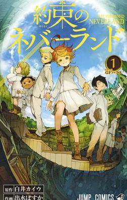
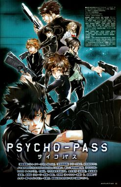
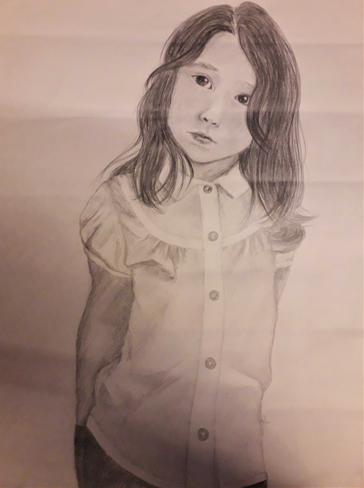
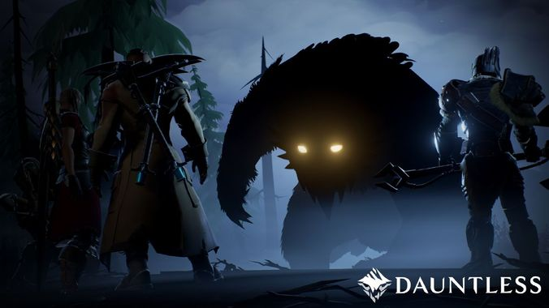
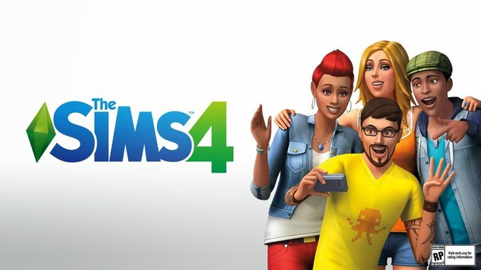

←retour à la page d'accueil
Mes Passions
À vrai dire, il y a énormement de choses que j'aime et une page ne serait pas assez pour parler de tout donc je vais seulement en citer quelques uns.
-
Les Mangas et les Animes
Je les ai mis ensemble car l'un est l'adaptation en dessin anime de l'autre. J'ai déja passé des vacances entières à ne faire que ça (à part quelques pauses pour aller voir du monde). C'est vraiment tout un univers mais souvent c'est soit on aime soit on aime pas, il y a rarement des entre-deux.
  source: wikipedia.org source: lien(je ne sais pas vraiment quel est ce site) -
Le Dessin
De manière générale, j'aime bien tout ce qui touche au manuel ou à l'art mais c'est le dessin et la mise en couleur à l'aquarelle que je préfère. En ce moment, je me suis plus penchée sur la reproduction de photos et les croquis de modèles réels.
 -
Les Jeux Videos
Je ne joue pas à beaucoup de jeux vidéos et pourtant j'aime tellement ce domaine que je voudrais travailler dedans. Je compense mon manque d'expérience en regardant des "let's play" et autres vidéos sur youtube.
  source: gamepedia.com source: youtube.com source: blogspot.com

{kind=link}
{kind=link}